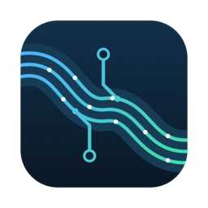
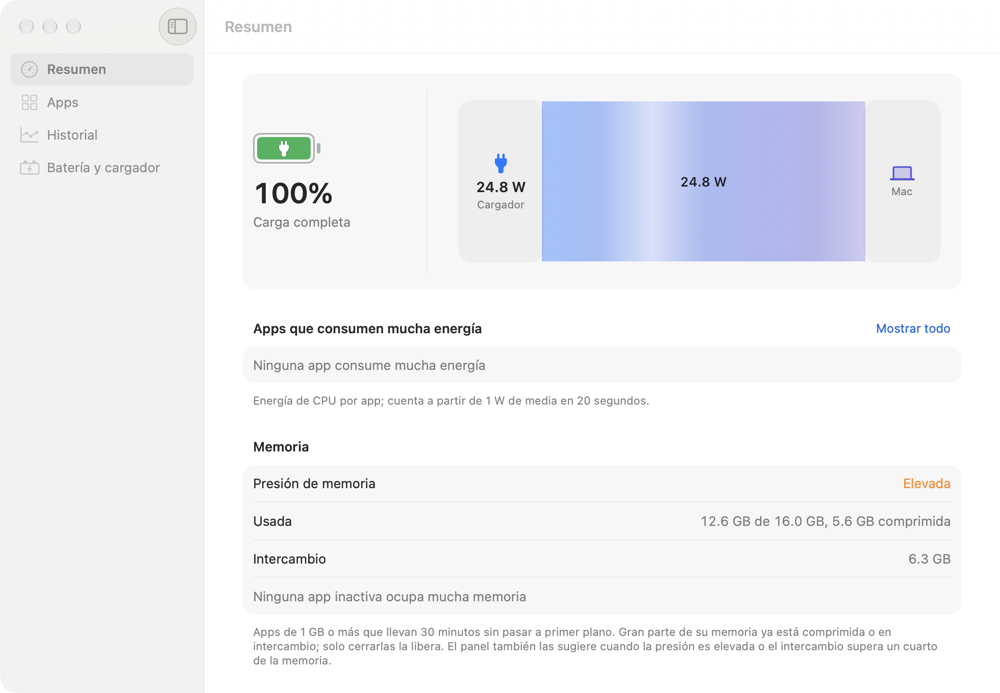
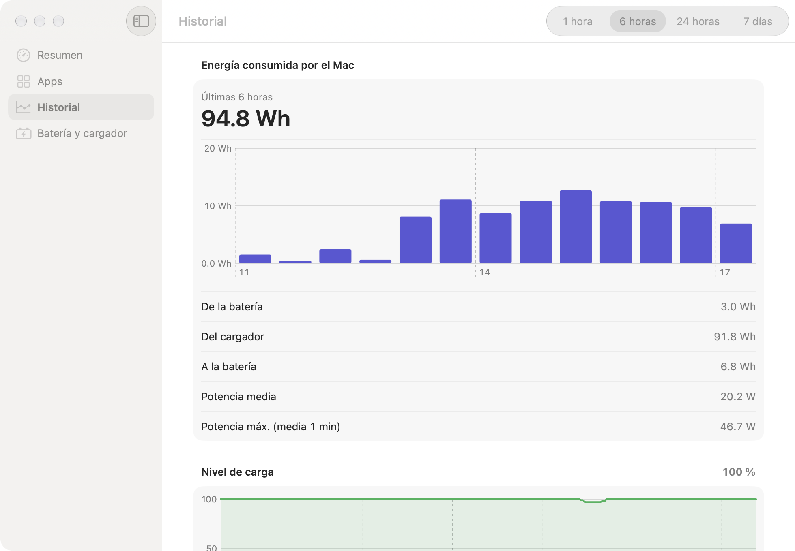

Monitor de energía de código abierto para MacBook
Cargador, batería y Mac, cada 2 segundos, en la barra de menús.

Rill es una app gratuita y de código abierto para la barra de menús del MacBook. Muestra en tiempo real cuántos vatios entrega el cargador, cuántos usa el Mac y cuántos entran o salen de la batería. Enumera las apps que más energía usan, vigila la presión de memoria y guarda 7 días de historial. Solo lee lo que macOS ya informa, no necesita permisos especiales y solo se conecta a internet cuando buscas actualizaciones.
Sin Monitor de Actividad. Sin adivinar.
La entrada del cargador cuando está enchufado; la descarga de la batería cuando no.
Cómo se reparte la potencia entre cargador, batería y Mac. El ancho de la cinta son los vatios.
Energía, CPU y memoria por app. Detecta apps que no responden y las cierra.
Presión de memoria y swap de un vistazo. Cuando falta memoria, enumera las apps inactivas que ocupan mucha.
La energía usada cada día, además de la potencia, la carga y la temperatura de la batería a lo largo del tiempo.
Estado, ciclos de carga, potencia del cargador, voltaje negociado y niveles USB-C PD compatibles.
De 1 hora a 7 días. Energía por periodo; pasa el puntero para ver cada uno.

Una línea en Terminal. El script comprueba la firma y coloca Rill en Aplicaciones.
curl -fsSL https://raw.githubusercontent.com/chengffei/rill/main/install.sh | bashO descarga la imagen de disco e instálala a mano:
Abre la imagen de disco y arrastra Rill a la carpeta Aplicaciones.
Haz doble clic en Rill. Cuando macOS diga que no puede verificar al desarrollador, haz clic en OK.
En Ajustes del Sistema › Privacidad y seguridad, desplázate hacia abajo y haz clic en Abrir igualmente.
Requiere macOS 26 o posterior en un Mac con chip de Apple y batería. Si el icono no aparece, puede que un gestor de la barra de menús lo haya ocultado.
Preguntas habituales sobre cómo instalar y usar Rill.
Instala Rill. La barra de menús muestra los vatios en tiempo real, y el panel los separa en entrada del cargador, carga o descarga de la batería y lo que usa el propio Mac, con actualizaciones cada 2 segundos.
No. Lee los sensores de potencia y los datos de batería que macOS pone a disposición de todas las apps, y la energía de tus propios procesos.
No. Rill solo muestra lo que está pasando; nunca cambia cómo se carga tu Mac.
No ejecuta ningún limpiador de memoria. Cuando falta memoria, muestra qué apps ocupan mucha memoria pero llevan 30 minutos sin usarse, para que puedas cerrarlas. Cerrarlas es lo que de verdad libera memoria.
Sí. Rill es gratuito y de código abierto bajo la licencia GPL-3.0.
Rill no está notarizado por Apple. Instálalo con el comando de Terminal para evitar el aviso, o abre la app una vez, cierra el aviso y haz clic en Abrir igualmente en Ajustes del Sistema › Privacidad y seguridad.
No. El historial se queda en tu Mac durante 30 días. Rill solo se conecta a internet cuando eliges Buscar actualizaciones.